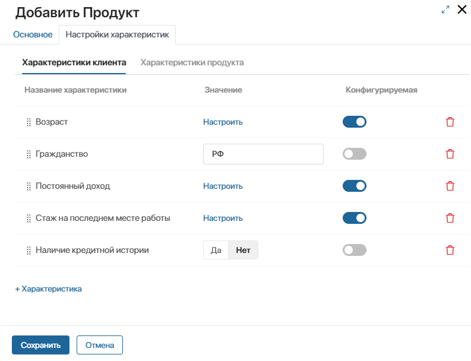
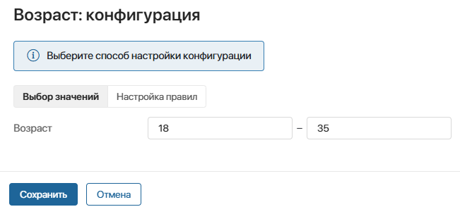

You can proceed to filling the product catalog if the directories of the Product Catalog workspace are populated. The created product will become available for selection in the app item where the Select Product widget is used, for example, on the page of a lead or a deal.
начало внимание
Only users with a paid CRM solution license which includes the Product Catalog workspace can work with the product catalog.
конец внимание
In the Product Catalog app, you can create products of two types:
- Simple. It contains only constant values of attributes. An employee selects a ready-made product with specified values, for example, on the page of a lead or a deal. Consider the Debit card banking product. It is simple as all its attributes have certain values. For example, the attribute Citizenship is set to USA.
- Configurable. For such a product, it is possible to define rules for filling in its attributes. An employee selects a product on the page of a lead or a deal and specifies a certain value from the allowed ones for the configurable attribute. For example, in the Mortgage for young families product, for the Age attribute you can specify a value from 18 to 35 years old, and for the Rate in % attribute the allowable value will be different depending on the amount and term of the mortgage.
Let’s consider how to create each type of product on the example of such bank products as Debit card and Mortgage for young families.
Add a product
To add a product:
- On the Product Catalog app page, in the upper right corner, click +Product. This will open the creation form, which consists of two tabs: General and Set Up Attributes.
- On the General tab, fill in the following fields:
- Name*. Enter the product name.
- Product ID. Specify the product ID in BRIX.
- Product external ID. Fill in this field if you are importing products from an external system or exporting, e.g., using API methods.
- Active from*, Active until*. Specify the period when the created product is relevant for use. For example, you can create a draft product. You can use it in work with clients and select it on pages of leads and deals from the start date until the expiration date. After that, the product becomes outdated. The system administrator can customize the product status change according to the specified expiration dates.
- Product categories*. Select an item in the Product Categories directory. In the left menu of the Product Catalog app, the new item will be displayed in the selected folder of the hierarchy of all products, as well as in its parent folders.
- Product group*. Select an item in the Product Groups directory. After that, the Set Up Attributes tab will display the list of attributes specified for the selected group.
- Managing department. Specify who monitors the relevance of the product. You can choose a user, a group, or an org chart item. The system administrator can grant access to edit the product page only to the responsible person.
- Product type. Select the Simple or Configurable option.
- Go to the Set Up Attributes tab and fill it in depending on the selected product type:
- Specify values for the attributes of the simple product.
- Configure the attributes of a configurable product.
- Save the product.
Set up attributes of a simple product
Let’s take the example of a simple Debit card product and see how to fill in the Set Up Attributes tab. Its composition depends on the parameters set on the General tab:
- The list of attributes is determined by the selected Debit cards product group.
- For each field it is possible to specify only a specific value, as the product type Simple is selected.
All fields to be populated will be displayed on the two tabs Customer attributes and Product attributes according to the configured attribute categories for any products.
You can create an individual set of attributes for a new product. To do this, add a field using the +Attribute button or delete an existing one on any tab.
Fill in the attribute values for the Debit card product:
- On the Customer attributes tab in the Citizenship field, specify the value USA.

- Fill in the field values on the Product attributes tab:
- Save the settings. After that the Debit card product will be added to the Product Catalog app.
Set up attributes of a configurable product
Let’s consider the example of a configurable product Mortgage for young families and fill in the Set Up Attributes tab.
Beforehand, on the General tab for this product, select the Mortgage product group and set the product type to Configurable. This data will determine the composition of the Set Up Attributes tab:
- The list of attributes depends on the settings set in the Mortgage product group.
- For each field it is possible to configure the range of values and rules, since the Configurable product type is selected.
Determine in advance for which attributes of the Mortgage for young families product you want to:
- Set constant values, as in a simple product.
- Set a selection of values.
- Configure the rule, i.e., dependence on other attributes.
If necessary, you can add fields using the +Attribute button or delete existing ones.
In our example, set the Set Up Attributes settings sequentially on the two tabs, starting with the Customer attributes tab.

Step 1: Set constant values
Set constant values in the fields:
- Citizenship. Set the value to USA.
- Credit history. Set the value to No.
Step 2: Set the selection of values for the attribute
In other fields on the Customer Attributes tab, set value ranges so that the employee can then specify only the allowable value in them. To do this:
- Enable the Configurable option for the Age, Permanent income, and Duration of present employment.
- Select one of the fields and click Configure.
- In the window that opens, on the Select values tab, specify the required range and save the field settings.

Next, set constant values and a selection of allowable values for the fields on the Product attributes tab as well.
Step 3: Configure a rule for an attribute
If the product has attributes whose values depend on other attributes, you can configure a rule for them. For example, the Mortgage for young families product has the Rate in % attribute, the value of which is determined by the amount and term of the mortgage:
- If the mortgage amount is from 500,000 to 10,000,000 and the term is 200 days or more, the rate is set at 9%.
- In other cases, the rate will be 8%.
Configure the above rule for the Rate in % field. To do this:
- In the Rate in % field, enable the Configurable option and click the gear icon.
- In the window that opens, select the Rule settings option. The Rule 1 section will be displayed.
- Click +Add Condition and fill in the condition parameters: Field, Operation, Value, and Logical Operator. You can add multiple conditions.
- In the Result field, set the range of values for the rate that the employee will be able to specify when filling in the product data on the lead or deal page if the specified condition is met. In our example we will enter the value 9. It will be displayed in the tooltip for the Rate in % field, and the employee will be able to specify only this value, otherwise an error will be displayed.
- In the Else section, specify the range of values that can be used to fill the Rate in % field if the specified rule is not fulfilled. In our example, this value is 8.

- Save the configured rules and then save the created product.
The Mortgage for young families product will then be added to the Product Catalog app.
After the simple Debit card product and the configurable Mortgage for young families product are created, the employee can select them in the Select Product widget. The configurable attributes can only be filled with allowed values. Read more in Select a product on the app item page.
Found a typo? Select it and press Ctrl+Enter to send us feedback